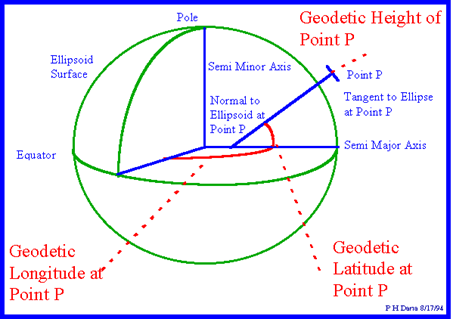
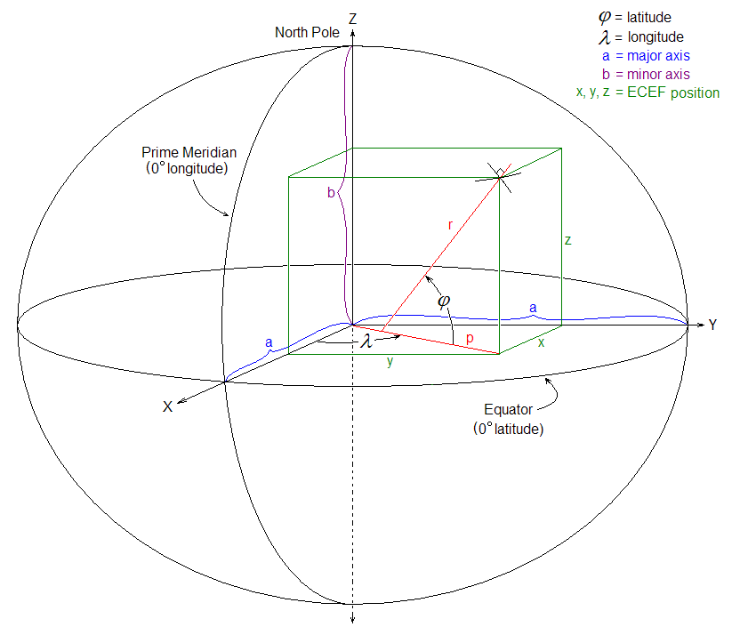
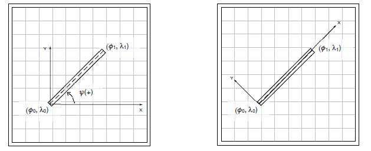

3 Universe Earth Atmospheric
Recurring Nomenclature
| Symbol | Definition |
|---|---|
| \(H_p\) | pressure altitude. The pressure associate with geopotential altitude on a standard day |
| \(a_0\) | speed of sound at std day sea level temperature |
| \(P\) | ambient pressure |
| \(P_0\) | standard day seal level ambient pressure |
| \(T\) | absolute temperature (Rankine or Kelvin) |
| \(T_0\) | standard day seal level absolute temperature |
| \(T_R\) | absolute temperature, Rankine scale |
| \(\rho_ο\) | standard day seal level ambient density |
| \(\rho\) | ambient density |
| \(g\) | acceleration due to gravity |
| \(g_0\) | standard earth acceleration due to gravity |
| \(\delta = P/P_0\) | atmospheric pressure/std day sea level pressure |
| \(\theta = T/T_0\) | atmospheric absolute temp/std day sea level absolute temp |
| \(\sigma = \rho/\rho_ο\) | atmospheric density/std day sea level density |
3.1 Universal Constants
(reference 3.1)
| Constant | Symbol | Value | Units |
|---|---|---|---|
| Avogadro’s number | \(N_A\) | \(6.022\,169 \times 10^{23}\) | molecules/mole |
| Boltzmann constant | \(k\) | \(1.380 \times 10^{-23}\) | J/K |
| electron charge | \(e\) | \(1.602 \times 10^{-19}\) | Coulomb |
| electron mass | \(m_e\) | \(9.109 \times 10^{-31}\) | kg |
| gas constant | \(R\) | \(8.314\,34\) | J/K mole |
| gravitational constant | \(G\) | \(6.673 \times 10^{-11}\) | Nm2/kg2 |
| neutron mass | \(m_n\) | \(1.674 \times 10^{-27}\) | kg |
| Planck constant | \(h\) | \(6.625 \times 10^{-34}\) | J sec |
| proton mass | \(m_p\) | \(1.672 \times 10^{-27}\) | kg |
| speed of light in a vacuum | \(c\) | \(2.998 \times 10^8\) | m/sec |
| unified atomic mass constant | \(m_u\) | \(1.660 \times 10^{-27}\) | kg |
| volume of ideal gas (std temp & press) | \(V\) | \(2.241 \times 10\) | m3/mol |
Newtonian Gravity
The gravitational field (\(g\)) near any mass can be calculated as \[ g = \frac{GM}{R_A^2} \]
where \(G\) is the universal gravitational constant and \(R_A\) is the absolute distance from the center of mass \(M\)
3.2 Earth Properties
(references 3.9.2, 3.9.3 )
| Property | Symbol | Value | Units |
|---|---|---|---|
| Std Earth gravitational acceleration | \(g_0\) | 9.8066 | m/s2 |
| 32.174 | ft/s2 | ||
| mass | \(5.9722 \times 10^{24}\) | kg | |
| \(13.22 \times 10^{24}\) | lb | ||
| rotation rate | \(\omega\) | \(7.292\,115 \times 10^{−5}\) | rad/sec |
| average density | \(5.522\) | g/cm3 | |
| \(344.7\) | lb/ft3 | ||
| radius average | \(R_{\mathrm{avg}}\) | \(6\,367\,444\) | m |
| \(3956.538\) | st. miles | ||
| \(20\,890\,522\) | ft | ||
| radius at the equator | \(R_e\) | \(6\,378\,137\) | m |
| radius at the poles | \(R_p\) | \(6\,356\,752\) | m |
| radius as a function of latitude, \(\phi\) (assumes perfect ellipsoid) | \[R = \sqrt{\left(\frac{\cos{\phi}}{R_e}\right)^2 + \left(\frac{\sin{\phi}}{R_p}\right)^2} \] |
Centrifugal Relief from Gravity
The earth’s “normal” gravity field includes both the Newtonian Law and a correction for the centrifugal force caused by the earth’s rotation. The centrifugal relief correction is \[ \Delta C R = -\frac{V^2}{R_x} = -\frac{\left( R_x \omega \right)^2}{R_x} = R_x \omega^2 \]
where \(\omega\) is the earth’s rotation rate and \(R_x\) is the perpendicular distance from the earth's axis to the surface and can be calculated as \(R_x =R \cos{\phi}\) (see figure below).

Rx determination
For any centrifugal relief calculations associated with aircraft performance, it is sufficiently exact (g ±0.000 04 [m/s2]) to use the average earth radius. An aircraft flying eastward contributes to centrifugal relief while a westbound aircraft diminishes it.
The International Association of Geodesy publishes the following equation (accurate to 0.005%) to calculate (local sea level gravity including the effects of centrifugal relief for* any point fixed to the earth's surface
\[ g_{\mathrm{lsl}} = 9.780 327 \left( 1 + 0.005 300 224 \sin^2{\phi} - 0.000\,058 \sin^2{2 \phi} \right) \left[ \frac{m}{s^2} \right] \]
The above equation is tabulated below for quick reference.
| Latitude (deg) |
Normal \(g_{\mathrm{local}}\) | |
|---|---|---|
| \((m/s^2)\) | \((ft/s^2)\) | |
| 0 | 9.780 327 | 32.088 |
| 15 | 9.783 659 | 32.098 |
| 30 | 9.792 866 | 32.188 |
| 45 | 9.805 689 | 32.171 |
| 60 | 9.818 795 | 32.214 |
| 75 | 9.828 569 | 32.249 |
| 90 | 9.832 185 | 32.258 |
The standard acceleration (\(g_0\)) corresponds to a latitude of \(46.0625°\).
\(g_{\mathrm{lsl}}\)* at the equator and the poles varies ±0.27% from \(g_0\).
Altitude Effect on Gravitational Acceleration
\(R_A\) is the sum of the earth’s local radius and the geometric distance, \(h_G\) above the surface: \(R_A = R + h_G\)
\[ g_{\mathrm{alt}} = g_{\mathrm{lsl}}\left( \frac{R}{R + h_G} \right)^2 \]
Gravitational acceleration at any geometric altitude:
| \(h_G\) (1000 ft) | \(g_{\mathrm{alt}}/g_{\mathrm{lsl}}\) |
|---|---|
| 0 | 1 |
| 10 | 0.999 04 |
| 20 | 0.998 09 |
| 40 | 0.996 18 |
| 60 | 0.994 28 |
| 80 | 0.992 38 |
| 100 | 0.990 49 |
Actual Gravitational Pull on an Aircraft
Adding a centrifugal relief correction due to the aircraft’s velocity, a complete calculation for its gravitational acceleration is \[ g_{A/C} = \left[ g_{\mathrm{lsl}} + \omega^2 R \cos{\phi} \right] \left[ \frac{R}{R + h_G} \right]^2 - \left( \omega + \frac{V_G \sin{\sigma}}{R + h_G} \right)^2 \left(R + h_G\right) \cos{\phi} \]
where \(V_G\) = ground speed and \(\sigma\) = ground track angle (\(0°\) = true North, \(90°\) = East, etc.).
Gravity Influence on Aircraft Cruise Performance
Even at the same altitude, changes in gravity due to latitude or centrifugal relief directly alter the required lift, drag, and fuel flow. For example, with sufficiently precise instrumentation, data collected heading West could show about 0.5% more drag and fuel flow than data collected heading East (centrifugal relief effect). After determining test and standard (or mission) values for \(g\), flight test values for \(C_L\), \(C_D\), drag, and fuel flow can be corrected to standard as follows:
\[C_{L_{\mathrm{std}}} = C_{L_t} \frac{N_{z_{\omega_{\mathrm{std}}}}}{N_{Z_{\omega_t}}} \left[\frac{g_{\mathrm{std}}}{g_{A/C}} \right] \]
\[C_{D_{\mathrm{std}}} = \frac{C^2_{L_{\mathrm{std}}}}{\pi \mathrm{AR}e} \]
\[\Delta D = D_{\mathrm{std}} - D_t = qS\left[C_{D_{i_{\mathrm{std}}}} - C_{D_{i_t}} \right] \]
\[\dot{W}_{f_{\mathrm{std}}} = \dot{W}_{f_t} + \Delta D \cdot TFSC \]
where \(N_z\) = normal load factor,
\(C_L\) = lift coefficient, \(C_D\) = drag coefficient,
\(\mathrm{AR}\) = aspect ratio, \(e\) = Oswald efficiency factor,
\(\Delta D\) = change in drag force,
\(TSFC\) = thrust specific fuel consumption, and \(\dot{W}_{f_{\mathrm{std}}}\) = standard day fuel flow
3.3 General Properties of Air
(reference 3.9.1)
| Property | Symbol | Value | Unit |
|---|---|---|---|
| Gas constant | \(R\) | 53.35 | ft lb/R lbm |
| 287.074 | J/kg K | ||
| 1716 | lb(ft)/slgs(R) | ||
| 3089.7 | lb(ft)/slgs(K) | ||
| Speed of sound | \(a_0 \sqrt{\theta}\) | 49.02 \(\sqrt{T_R}\) | ft/sec |
| 33.42 \(\sqrt{T_R}\) | miles/hr | ||
| 29.04 \(\sqrt{T_R}\) | knots | ||
| 20.05 \(\sqrt{T_R}\) | m/sec | ||
| Density | \(\rho\) | 0.002 3769 | slug/ft3 |
| 1.225 | kg/m3 (at \(15°\)C) | ||
| Specific weight | \(g_\rho\) | 0.076 47 | sec2/ft4 |
| Specific heat capacity at \(59°\)F (=\(T_0\)) | |||
| at constant pressure | \(c_p\) | 0.240 | BTU/lb R |
| 1004.76 | J/kg K | ||
| at constant volume | \(c_v\) | 0.1715 | BTU/lb R |
Normal Composition of clean, dry atmospheric air near sea level, by volume
| Gas | Symbol | Proportion |
|---|---|---|
| Nitrogen | N2 | 78.084 % |
| Oxygen | O2 | 0.948 % |
| Argon | A | 0.934 % |
| Carbon Dioxide | CO2 | 0.031 % |
| Neon | Ne | 0.002 % |
| TOTAL | 99.9988 % |
plus traces of helium, kryton, xenon, hydrogen, methane, nitrous oxide, ozone, sulfur dioxide, nitrogen dioxide, ammonia, carbon monoxide, and iodine.
Viscosities of Air
Coefficient of Viscosity \[ \mu_c = \frac{7.3025 \times 10^{-7} \left(T_R \right)^{3/2}}{T_R + 198.72} \text{ lb/ft sec}\]
Kinematic viscosity \[ \nu = \frac{\mu_c}{g\rho} \text{ ft}^{2}\text{/sec} \]
Absolute Viscosity \[ \mu = \rho\nu = \left[ 0.317 \left(T_R\right)^{3/2} \left( \frac{734.7}{T_R + 216} \right) \right] \times 10^{-10} \text{ lb sec/ft}^{2} \]
Atmospheric Viscosity (U.S. Standard Atmosphere)
Pressure Altitude ft |
Kinematic Viscosity υ ( ft2/sec) |
Absolute Viscosity μ (lb sec/ft2) |
|---|---|---|
| 0 | 1.572 x 10-4 | 3.737 x 10-7 |
| 5000 | 1.776 | 3.638 |
| 10 000 | 2.013 | 3.538 |
| 15 000 | 2.293 | 3.435 |
| 20 000 | 2.625 | 3.330 |
| 25 000 | 3.019 | 3.224 |
| 30 000 | 3.493 | 3.115 |
| 35 000 | 4.065 | 3.004 |
| 40 000 | 5.074 | 2.981 |
| 45 000 | 6.453 | 2.982 |
| 50 000 | 8.206 | 2.983 |
| 55 000 | 10.44 | 2.985 |
| 60 000 | 13.27 | 2.986 |
| 70 000 | 21.69 | 3.005 |
| 80 000 | 35.75 | 3.043 |
| 90 000 | 58.53 | 3.080 |
| 100 000 | 95.19 | 3.118 |
| 150 000 | 1066 | 3.572 |
| 200 000 | 6880 | 3.435 |
Psychrometric Chart for Seal Level Barometric Pressure


3.4 Standard Atmosphere
Divisions of the Atmosphere

Divisions of the Atmosphere
Constantly changing atmospheric conditions cannot be duplicated at will to provide the exact environment in which a flight takes place. A standard atmosphere provides a common basis to relate all flight test, wind tunnel results, aircraft design and general performance. Several models of “standard atmosphere” exist with minor differences based on mathematical constants used in the calculations.
| Type of Altitude | Symbol | Definition |
|---|---|---|
| Geometric | \(h_G\) | The height of an aircraft above sea level (also called tapeline altitude) |
| Absolute | \(h_a\) | The height of an aircraft above the center of the earth: (geometric altitude + radius of the earth) |
| Geopotential | \(h\) | Required because \(g\) changes with height. If potential energy is calculated using sea level weight ( \(W_{\mathrm{SL}} = mg_0\)) instead of actual weight (\(W = mg\)), then the altitude must be lower. \(h = W/W_{\mathrm{SL}} h_G\) |
| Pressure | \(H_p\) | The altitude, on a standard day, at which the test day pressure would be found |
| Density | \(H_D\) | The altitude, on a standard day, at which the test day density would be found |
| Temperature | The altitude, on a standard day, at which the test day temperature would be found |
Assumptions on which the standard atmosphere is built
- The air is dry (only 0.4% per volume of water vapor)
- The air is a perfect gas and obeys the equation of state, \(P = \rho gRT\), where \(R = 53.35 \text{ft lb/°R lbm}\)
- The gravitational field decreases with altitude
- Hydrostatic equilibrium exists (\(\Delta p = −\rho g_0 \Delta h\))
Standard Day Sea Level Atmospheric Conditions
| Parameter | Symbol | Value | Unit |
|---|---|---|---|
| Pressure | \(P_0\) | \(2116.22\) | lb/ft2 |
| \(14.696\) | lb/in2 | ||
| \(29.921\) | in Hg | ||
| \(1013.25\) | HPa (mb) | ||
| \(101,325\) | Pa | ||
| Temperature | \(T_0\) | \(288.15\) | K |
| \(518.67\) | R | ||
| \(59\) | °F | ||
| \(15\) | °C | ||
| Density | \(\rho_0\) | \(0.002\,3769\) | slgs/ft3 |
| (at \(15°\)C) | \(0.076\,47\) | lbm/in3 | |
| \(1.255\) | kg/m3 | ||
| Speed of Sound | \(a_0\) | \(1116.45\) | ft/sec |
| \(661.478\) | KTAS | ||
| \(761.14\) | mph | ||
| \(340.294\) | m/sec | ||
| Acceleration Due to Gravity | \(g_0\) | \(32.174\) | ft/sec2 |
| \(9.806,65\) | m/sec2 | ||
| Temperature Lapse Rate | \(L\) | \(1.98\) | K/kft or °C/kft |
| (up to \(36\,000\) ft or \(11\) km) | \(3.56\) | °F/kft | |
| \(6.49\) | K/km |
1976 U.S Standard Atmosphere Equations
Troposphere
Below \(36\,089\) ft (\(11\,000\) m) and pressure less than \(22\,636\) Pa
\[\begin{align} \theta &= 1 − \left( L/Τ_ο \right) h = 1 - \left( 6.875\,5856 \times 10^{-6} \right) h \\ \sigma &= \theta^{n-1} \\ \delta &= \theta^n \\ \end{align}\]
where \(n = 5.255\,876\), \(h\) = geopotential altitude [ft]
Stratosphere
Between \(36\,089\) ft and \(65\,616\) ft (\(11\,000\) m and \(20\,000\) m) the standard day temperature is a constant \(216.65\) K, therefore:
\[\begin{align} \theta &= 0.751\,865 \\ \sigma &= 0.297\,076\, \mathrm{e}^{0.000\,048\,063 \left[ h - 36\,089 \right]} \\ \delta &= 0.223\,361\, \mathrm{e}^{0.000\,048\,063 \left[ h - 36\,089 \right]} \\ \end{align}\]
The above relations characterize the standard atmosphere table in this handbook. They may be re-written to solve for pressure altitude (\(H_p\)) for any ambient pressure.
Below the tropopause (ambient pressure greater than \(472.683\) psf or \(22\,632\) Pa)
\[ H_p \left[ \text{ft} \right] = \frac{ 1-\left( \frac{P_a}{P_0} \right)^{0.190\,2632} }{6.875\,5856 \times 10^{-6}} \]
In the troposphere (ambient pressure between \(114.347\) and \(472.683\) psf or between \(5475\) and \(22\,632.1\) Pascal)
\[ H_p \left[ \text{ft} \right] = 36\,089+ \frac{ \ln \left( \frac{P_a}{P_0} \right) + 1.498\,966 }{ 0.000\,048\,063 } \]
1976 U.S. Standard Atmosphere Graph

1976 US Standard Atmosphere Graph


Standard Atmosphere Calculator Website Link http://www.digitaldutch.com/atmoscalc/
3.5 Sea States
(ref 3.3)
Sea Scale
| Code | Sea | Wave Height, Crest to Trough [ft] |
|---|---|---|
| 0 | Calm | 0 |
| 1 | Smooth | Less than 1 |
| 2 | Slight | 1-3 |
| 3 | Moderate | 3-5 |
| 4 | Rough | 5-8 |
| 5 | Very rough | 8-12 |
| 6 | High | 12-20 |
| 7 | Very high | 20-40 |
| 8 | Mountainous | 40+ |
| 9 | Confused, Used as additional description 1-8 |
International Swell Scale
| Code | Swell | In Open Sea |
|---|---|---|
| 0 | None | low |
| 1 | Short or average | |
| 2 | Long | |
| 3 | Short | Moderate height |
| 4 | Average | |
| 5 | Long | |
| 6 | Short | heavy |
| 7 | Average | |
| 8 | Long | |
| 9 | Confused, Used as additional description 1-8 |
3.6 Sunrise Sunset Times
Sunrise Sunset Times
3.7 Crosswind Components

Crosswind Components
3.8 Geodetic Measurements
Acronyms, Abbreviations and Symbols
| Notation | Definition |
|---|---|
| DGPS | Differential Global Positioning System |
| ECEF | Earth Centered Earth Fixed coordinate system |
| GPS | Global Positioning System |
| INS | Inertial Navigation System |
| WGS84 | World Geodetic System 1984 |
| \(a\) | Earth’s semi-major axis radius |
| \(b\) | Earth’s semi-minor axis radius |
| \(D\) | Great circle distance between two points |
| \(e\) | eccentricity of the Earth square |
| \(f\) | Earth’s flatness factor |
| \(h\) | geodetic height |
| \(N\) | radius of curvature in prime vertical |
| \(P\) | radius of curvature in prime vertical |
| \(\overset{\rightarrow}{P}\) | Vector from earth center extending to coordinates |
| \(r\) | Earth’s radius |
| \(X\) | ECEF x coordinate |
| \(Y\) | ECEF y coordinate |
| \(Z\) | ECEF z coordinate |
| \(\phi\) | Geodetic latitude |
| \(\varphi\) | Angle between the two \(\overset{\rightarrow}{P}\) vectors originating at the Earth’s center and extending to their respective coordinates at the start and end points. |
| \(\lambda\) | Geodetic longitude |
| \(\psi\) | Runway heading with respect to true North. |
Earth Modeling
The Geodetic System defines the location of any point relative to the earth using latitude, longitude and height (Figure 3.8-1, point P). Longitude and latitude are expressed in degrees, minutes, seconds. Longitude lines extend \(\pm\) 180 degrees from the Prime Meridian, run north to south, and converge at the poles. Latitude lines are parallel to the equator and extend \(\pm\) 90°.

http://www.colorado.edu/geography/gcraft/notes/coordsys/gif/latlon2.gif
Figure 3.8-1 Geodetic Coordinate System
The 1984 world geodetic system, WGS84, models the earth’s surface as an oblate spheroid - an ellipsoid rotated about its semi-minor axis. In this model, used by global positioning systems, the earth’s semi-major axis, \(a\) is 6 378 137.0 meters and the semi-minor axis, b is 6 356 752.314 meters.
The flatness factor (\(f\)) is defined as:
\[f = \frac{a - b}{a}\]
For the WGS84 model, \(f = \frac{1}{298.257\,223\,563}\)
Because the earth is not perfectly spherical, there are various methods for defining latitude. Unlike the geocentric latitude which uses the earth’s center for determining a point’s latitude, the geodetic latitude (used herein) is the angle between the equatorial plane and a line normal to the reference ellipsoid. Figure 3.8-1 exaggerates this with a normal line being well offset from the earth’s center. This definition leads to a degree of latitude being longer at the pole than at the equator: 111 694 m (60.3 nm) vs. 110 574 m (59.7 nm).
The geodetic longitude of a point is the angle between a reference plane and a plane passing through the point, both planes being perpendicular to the equatorial plane.
Mathematically, the geodetic surface is a smooth ellipsoid modeling the earth’s surface. Clearly, the topography (actual surface height) deviates from this model whenever land is above or below sea level. Less evident is that the actual sea level also deviates from the geodetic model due to local changes in the earth’s gravity. Specifically, mass variations caused by changes in earth density and topography, such as mountains or trenches, change local gravity vectors and therefore sea level relative to the ellipsoid.
Reference to Mean Sea Level (MSL) served as the traditional way to express topographic or bathymetric height. Geodesists once considered the sea in balance with the earth's gravity and formed a perfectly regular figure. MSL is usually described as a tidal datum that is the arithmetic mean of hourly water elevations observed over a 19-year (Metonic) cycle. This definition averages out tidal highs and lows caused by the changing effects of the gravitational forces from the moon and sun. MSL defines the zero elevation (vertical datum) for a local area. Because the sea surface conforms to the earth's gravitational field, MSL also has slight hills and valleys similar to the land surface but much smoother. Zero elevation as defined by one nation is often not the same zero elevation defined by another, thus locally defined vertical datums differ from each other.
The Geoid is the equipotential surface in the earth’s gravity field that coincides most closely with the mean sea level extended continuously under the continents. In other words, it approximates the level of any non-flowing water connected (actually or theoretically) to the seas by waterway or via trenches or tunnels. The geoid surface undulates relative to the geodetic ellipsoid and is perpendicular to the local gravity vector – as seen with a plumb line. Similarly, a spirit level defines the local surface parallel to the geoid, which is tangent to the local horizon. Because the geoid is an equipotential surface, it is the best datum for measuring potential energy and is the true zero surface for measuring elevations. Previously, there was no way to accurately measure the geoid, so heights were measured relative to the similar MSL. EGM96 (Earth Gravity Model 1996) represents the best geoid model currently available and shows smoothly changing surface undulations ranging from +85 to -107 meters relative to the WGS84 ellipsoid.
The geoid surface cannot be directly observed, thus heights above or below it can't be directly measured. Instead the geoid surface is modeled mathematically using gravitational measurements. Although for practical purposes, at the coastline the geoid and MSL surfaces are assumed to be essentially the same, at some spots the geoid can actually differ from MSL by several meters.

http://principles.ou.edu/earth\_figure\_gravity/geoid/geoid-ellipsoidal-orthometric\_height.jpg
Figure 3.8-2 Height Comparisons
Ellipsoidal height (h) is the same as geodetic height and is the geometric distance between an object and the earth ellipsoid (Figure 3.8-2). This may be a GPS output.
Geoid height (N) is the height of the geoid above or below the ellipsoid. Some GPS devices output this undulation value in the data stream.
Orthometric height (H) is the geometric distance along a gravitational force line from a given point P to the geoid. This is essentially the conventional height measurement because the geoid approximates MSL- the traditional method for determining height.
Modern GPS units typically include a geoid model (e.g. EGM-96) that provides N (geoid height over the WGS ellipsoid) at the current position. Such a unit can provide the height above geoid. If GPS height output is only available relative to the ellipsoid (h), then traditional Orthometric height (H) above the geoid can be obtained by subtracting the geoid height above the ellipsoid. \[http://www.esri.com/news/arcuser/0703/geoid1of3.html\]
ECEF Transformations
For the purpose of performance, navigation, or noise analysis, flight testers may require distances between two points (the shortest being along the great circle arc) and the average heading of that arc. Calculating these from typical Geodetic System Lat/Long inputs requires conversion to the Earth Centered Earth Fixed (ECEF) coordinate system as shown in Figure 3.8-3.

Figure 3.8-3 Earth Centered Earth Fixed Coordinate System
The ECEF coordinate system is a Cartesian system with the origin at the earth’s center. In this system, the X-axis is defined by the intersection of the Prime Meridian and equatorial planes. The Z-axis goes through the North Pole. The Y-axis completes a right-handed orthogonal system by a plane 90 degrees east of the X-axis and its intersection with the equator.
Geodetic System (lat/long/height) data converts to ECEF as follows:
\[\begin{align} x &= \left(N + h \right)\cos{\varphi}\cos{\lambda} \\ y &= \left(N + h \right)\cos{\varphi}\sin{\lambda} \\ z &= \left(N \left[ 1-e^2 \right] + h \right) \sin{\varphi} \\ \end{align}\]
where,
\(x\) = ECEF coordinate parallel to the X-axis
\(y\) = ECEF coordinate parallel to the Y-axis
\(z\) = ECEF coordinate parallel to the Z-axis
\(\varphi\) = geodetic latitude
\(\lambda\) = geodetic longitude
\(h\) = height above geodetic (ellipsoid) surface
\(N\) = Normal radius of curvature; distance from earth axis to any point on the geodetic surface at that latitude (extension of r to axis shown in Figure 3.8-3).
\[N = \frac{a}{\sqrt{ \left(1 - e^2 \right) \sin^{2}{\phi}}}\]
where,
\(a\) = semi-major axis radius (\(6\,378,137\) m; \(20\,925\,647\) ft)
\(e^2\) = eccentricity squared; \(e^{2} = 1 - \left( \frac{a}{b} \right)^{2} = 2f - f^{2}\) = 0.006 694 380 02290 (Earth, per WGS84).
Also useful is
\(M\) = Meridian radius of curvature; distance from earth axis to any point on the geodetic surface at that longitude.
\[M = \frac{a \left(1 - e^{2} \right)}{\left\lbrack \left( 1 - e^{2} \right) \sin^{2}(\phi) \right\rbrack^{1.5}}\]
Great Circle Calculations
Any plane passing through the center of a spheroid traces a Great Circle around the perimeter of that spheroid. The shortest distance between two points on the surface is that portion of the great circle arc encompassing both points (Figure 3.8-3).

Figure 3.8-3 Great Circle Arc
Except when moving around the equator, navigating along a great circle route has the characteristic of intercepting longitude lines at different angles. In other words, the heading (or bearing) changes along the route. Analysis shows bearing change along a great circle route:
- Is never greater than the longitude difference between the end points.
- Approaches the value of the longitude change as the final latitude approaches a pole (regardless of initial latitude).
- Is smallest when the final latitude is at the equator (for this case, bearing change ≈ longitude change x initial latitude/100).
Calculate the great circle distance (D) between points (subscripts 1 and 2) as
\[\begin{align} P_{1} &= \sqrt{x_{1}^{2} + y_{1}^{2} + z_{1}^{2}} \\ P_{2} &= \sqrt{x_{2}^{2} + y_{2}^{2} + z_{2}^{2}} \\ \overset{\rightarrow}{P}_{1} \overset{\rightarrow}P_{2} &= P_{1} P_{2}\cos{\varphi} = x_{1} \cdot x_{2} + y_{1} \cdot y_{2} + z_{1} \cdot z_{2} \\ \varphi &= \arccos\left( \frac{x_{1} \cdot x_{2} + y_{1} \cdot y_{2} + z_{1} \cdot z_{2}}{P_{1} \cdot P_{2}} \right) \\ D &= P_{\mathrm{avg}} \cdot \varphi \end{align}\]
where \(P\) = distance from earth center to any point (including height above the spheroid surface).
\(\overset{\rightarrow}{P}\) = Vector from the Earth’s center to point P.
ϕ = Angle between the two \(\overset{\rightarrow}{P}\) vectors
http://www.movable-type.co.uk/scripts/latlong.html provides equations an online tool for calculating great circle initial & final bearings (headings).
For shorter distances typical of local flight testing, the Great Circle model matches the following two-dimensional approximations.
| Distance North-South (Northing) | \(dy = N \cdot \sin\left( \Delta\phi \right)\) |
| Earth’s radius East-West | \(r = N \cdot \cos{\phi}\) |
| Distance East-West (Easting) | \(dx = r \cdot \sin\left(\Delta\lambda\right)\) |
| 2-D distance between two points | \(D = \sqrt{dx^2 + dy^2}\) |
| Heading between two points (relative to true north) | \(\Phi = \arctan \left( dy/dx \right)\) |
An error analysis of the above 2-D heading approximation shows it consistently lies between the initial and final headings transpiring during great circle navigation and is closest to the final heading. This occurs when considering up to \(10\) degrees longitude change and is therefore sufficiently accurate for lesser changes that arise in flight testing (e.g. radial from a navigation transmitter).
An error analysis of the above 2-D distance approximation shows accuracy within \(0.6\%\) of the great circle distance when changing latitude and longitude \(1\) degree, and within \(3\%\) when changing latitude and longitude \(10\) degrees. It is accurate to within \(0.4\%\) when changing only latitude or longitude \(10\) degrees.
Local Distance Transformation
Latitude \(\phi\), longitude \(\lambda\), and height (typical GPS output data) can be transformed into rectangular (X,Y,Z) coordinates. The following presents a method for applying this to two different coordinate systems, both with the X-Y axes defining the horizontal plane. This is useful when working with local distances associated with typical flight testing such as noise measurement, local navigation, or field performance.
Figure 3.8-4a shows a case where the X-Y coordinate system aligns with the latitude & longitude grid. Figure 3.8-4b shows a case where the X-Y coordinate system aligns with a runway, with Y=0 defining the centerline. In both cases, a designated primary reference datum \(\phi_0, \lambda_0\), such as the runway centerline threshold, coincides with X=0, Y=0. With the example shown in Figure 3.8-4b, the opposite end of the runway centerline \(\phi_1, \lambda_1\), coincides with X = runway length and Y = 0.

Figure 3.8-4: Local X-Y Coordinate System Aligned with (a) \(\phi\), \(\lambda\) Grid; (b) Runway
Because each degree of latitude change is not always exactly \(60\) nm and because the spacing between degrees of longitude changes markedly with latitude, converting from degrees latitude & longitude change to distance requires scaling factors. First select equatorial distances for each degree change
\[\begin{align} \phi_{\mathrm{scale}} \left\{ \phi = 0 \right\} &= 110\,574 \text{m} = 362\,776.6 \text{ft} = 59.705\,18 \text{nm} \\ \lambda_{\mathrm{scale}} \left\{ \phi = 0 \right\} &= 111\,319.5 \text{m} = 365\,221.4 \text{ft} = 60.107\,72 \text{nm} \\ \end{align}\]
Use average latitude to calculate latitude and longitude scaling factors
\[\begin{align} \phi_{\mathrm{scale}} &= \frac{\phi_{\mathrm{scale}} \left\{ \phi = 0 \right\} }{ \left\lbrack \left( 1 - e^{2} \right) \sin^{2}(\phi) \right\rbrack^{1.5} } \\ \\ \lambda_{\mathrm{scale}} &= \frac{\lbrack \lambda_{\mathrm{scale}} \left\{ \phi = 0 \right\} \rbrack \cdot \cos{\phi}}{\sqrt{ \left(1 - e^2 \right) \sin^{2}{\phi}}} \\ \end{align}\]
Calculate X and Y components of distances aligned with the latitude & longitude grid (Figure 3.8-4a)
\[\begin{align} Y = \phi_{\mathrm{scale}} \left(\phi_1 - \phi_0 \right) \\ X = \lambda_{\mathrm{scale}} \left(\lambda_1 - \lambda_0 \right) \\ \end{align}\]
The 2-D local (vice great circle) distance between any two points on the X-Y plane is
\[D = \sqrt{X^2 + Y^2} \]
For field performance work, it is preferable to align X & Y with the runway as shown in Figure 3.8-4b. To convert from grid-aligned to runway-aligned coordinates, apply a rotation matrix that ensures X remains positive when going from point \(\phi_0, \lambda_0\) towards \(\phi_1, \lambda_1\). The rotation angle, \(\psi\), is positive counter-clockwise from true East to the direction of the runway. [Note: do not confuse \(\psi\) with runway heading measured relative to magnetic north].
The function \(\psi = \mathrm{atan2} \left( X,Y \right)\) returns rotation angles from \(-\pi\) to \(\pi\), so that rotating to headings between \(90°\) and \(270°\) results in negative rotation angles.
For any point (\(\phi, \lambda\)), calculate runway-aligned X & Y distances using
\[\begin{align} X &= \phi_{\mathrm{scale}} \left(\phi - \phi_0 \right)\sin{\psi} + \lambda_{\mathrm{scale}} \left(\lambda - \lambda_0 \right)\cos{\psi} \\ Y &= \phi_{\mathrm{scale}} \left(\phi - \phi_0 \right)\cos{\psi} - \lambda_{\mathrm{scale}} \left(\lambda - \lambda_0 \right)\sin{\psi} \\ \end{align}\]
This provides a right-handed rectangular coordinate system where X is positive from (\(\phi_0, \lambda_0\)) towards (\(\phi_1, \lambda_1\)) and Y is positive left of the runway centerline (Figure 3.8-4b).
Calculating aircraft height Z above the X-Y plane requires defining where the X-Y plane lies. An analyst may define Z=0 at some arbitrary height (i.e. GPS altitude at the beginning of a maneuver) and consider only changes from that reference.
For field performance, it is typical to use the runway altitude as the reference. Because runway altitudes vary however, height should be surveyed and modeled or tabulated as a function runway centerline position, H{X}. For best accuracy, the runway survey accounts for GPS antenna height above the surface. Airplane height above the X-Y plane (Z) is then
\[Z = \zeta - H\{X\}\]
where \(\zeta\) is the test GPS antenna’s altitude.
Note: Analysts can determine Z using either Orthometric height above the geoid (H) or above the geodetic surface (h) – as long as the runway surface model H{X} uses the same reference.
3.9 Temperature Compensated Barometric Altitude
Background: Pressure altitude is the geopotential height above mean sea level (MSL) associated with atmospheric pressure on a theoretical standard day. Geopotential height is almost identical to geometric (a.k.a. tapeline) altitude, as seen in page 03-5. Altimeters set at 29.92 in Hg (or 1013 HPa) display pressure altitude. An altimeter’s baro-set knob allows pilots to bias the pressure vs. altitude relation so it matches sea level pressure for non-standard conditions. Matching the local altimeter setting (known as setting QNH in many parts of the world) adjusts the altimeter so it displays nearly the same altitude above MSL for non-standard pressure conditions. The correct setting is critical for terrain & obstacle clearance when the pilot’s visibility is low.
Note: When operating well above terrain and obstacles, it is more critical to ensure all aircraft use the same altimeter setting so they de-conflict with each other. Because chances are high that pilots might not know of or properly re-set the altimeter numerous times during high altitude flights, aviation authorities established transition altitudes. When climbing above the transition altitude, all pilots must set altimeters to read pressure altitude (baro setting at 29.92 or 10113 HPa, known as QNE or standard baro setting). Different countries use different transition altitudes (e.g. 18,000 ft MSL in U.S. and Canada; 14,000 ft MSL in Japan; 3,000 ft MSL in The Netherlands). Regardless of the transition altitude, pilots and air traffic controllers refer to altitudes above it as a “Flight Level.” Flight level is abbreviated as FL and is quoted in hundreds of feet above MSL. For example operating at 36,000 ft (always pressure altitude above MSL) is abbreviated as FL360.
Although the long-used practice of matching the local altimeter setting has been sufficiently safe in the vast majority of operations, it in fact does not account for temperature deviation from standard conditions. Extreme temperature deviations cause a classic mechanical altimeter to display an MSL altitude erring by hundreds of feet. Modern technology allows calculating and displaying a more accurate altitude that corrects for temperature deviations. The following equation yields temperature-compensated altitude which better estimates geometric altitude above MSL, (h_G. Calculations require knowledge of aircraft’s baro and pressure altitudes and the terminal airport’s temperature and pressure altitude. In lieu of pressure altitudes, calculations allow for implementing the field elevation (depicted on airport approach plates, etc.) and so-called baro bias. Baro bias is the displayed altitude shift when switching from local to standard altimeter setting.
\[h_G = H_b + \frac{T_{\mathrm{apt}} - T_0}{L - Hp_{\mathrm{apt}} } \ln \left[ 1 + \frac{L \left( H_p - H_{p_{\mathrm{apt}}} \right) }{T_0 + L H_{p_{\mathrm{apt}}}} \right]\]
where \(h_G\) = temperature-compensated altitude
\(H_b\) = baro altitude (displayed when altimeter is set to local value)
\(T_{\mathrm{apt}}\) = airport temperature (Kelvin)
\(T_0\) = standard day sea level temperature = 15 deg C = 288.15 K
\(L\) = standard temperature lapse rate = -0.0065 K/m = -0.001 9812 K/ft
\(H_{p_{\mathrm{apt}}}\) = airport pressure altitude ( = airport field elevation - baro bias)
\(H_p\) = aircraft pressure altitude ( = H_b - baro bias)
Note: ensure altitude units are consistent with lapse rate units.
In lieu of the pilot adjusting the baro set knob to determine baro bias, it may be calculated using
Baro bias = \(H_b - H_p = H_b - \frac{29.92^{0.1903} - PA^{0.1903}}{0.000\,013\,13}\) [ft]
where
PA = ambient pressure = {altimeter setting [in Hg]0.1903 - \(H_b\)(0.000 013 13)}1/0.1903
Flight testers can use the above to verify the aircraft’s temperature compensation system is working correctly. Data analysts can use these equations to more precisely determine geometric height above the ground–potentially useful for performance or pitot-static flyby testing.
3.10 References
| 3.1 | Anon., “Aeronautical Vestpocket Handbook” ,Part No. P&W 079500, United Technologies Pratt & Whitney, Canada, 1990. |
| 3.2 | Lawless, Alan. R. et al, “Aerodynamics for Flight Testers,” National Test Pilot School, P.O. Box 658, Mojave CA, 93501, 1999. |
| 3.3 | Denno, Richard R., et al “AIAA Aerospace Design Engineers Guide” ISBN 0-930403-21-5, AIAA, 1987. |
| 3.4 | Global Positioning System Overview, Peter H. Dana, Department of Geography, University of Texas at Austin, 1994. [www.colorado.edu/geography/gcraft/notes/gps/gps_f.html] |
| 3.5 | Charles D Ghilani, Penn State College of Engineering, 2008 [http://surveying.wb.psu.edu/sur351/georef/Ellip4.htm] [www.colorado.edu/geography/gcraft/notes/gps/gps_f.html] |
| 3.6 | Standard Atmosphere Calculator Website Link [http://www.digitaldutch.com/atmoscalc/]. |
| 3.7 | Movable Type Scripts. [http://www.movable-type.co.uk/scripts/latlong.html]. [Calculate distance, bearing and more between Latitude/Longitude points] |